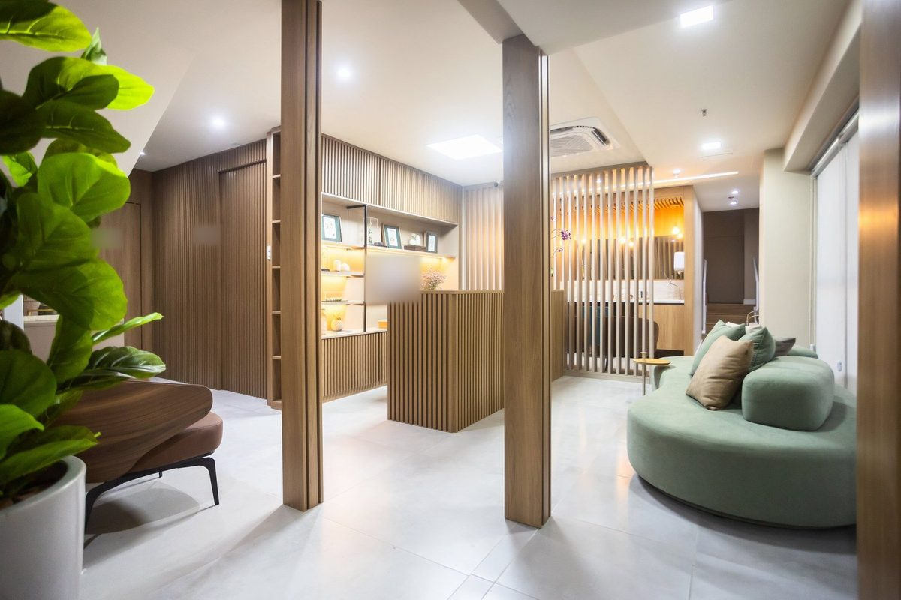
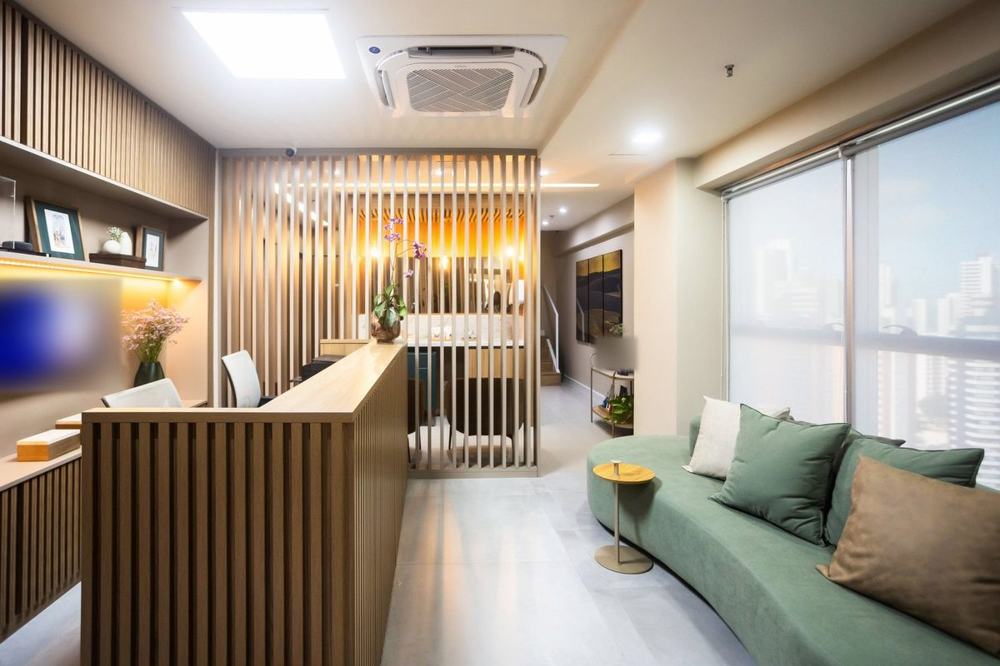

Depilação a laser pode piorar o melasma?
“O tratamento com laser pode desencadear manchas em quem já tem uma tendência e alguns podem piorar o melasma.”
Ler a resposta na DoctoraliaDermatologista · CRM-BA 20166 · RQE 14841
A Dra. Ilka Magalhães é dermatologista em Salvador, membro titular da Sociedade Brasileira de Dermatologia, com atuação em dermatologia clínica e estética. Atende adultos no Edf. Horto Office, no Horto Florestal.

Por onde começar
Cada página reúne o que a Dra. Ilka trata, o que ela já respondeu a pacientes e o que vale conversar na consulta.
Doenças da pele que pedem diagnóstico e acompanhamento, inclusive o tratamento com isotretinoína.
Ver a páginaManchasPor que peles morenas mancham depois de uma inflamação e quando o laser pede cautela.
Ver a páginaEstéticaToxina botulínica e ácido hialurônico, com avaliação antes e cuidado depois.
Ver a páginaFirmeza da peleBioestimuladores, skinbooster e outras opções que podem ser discutidas em consulta.
Ver a páginaTambém: queda de cabelo e couro cabeludo · quem é a Dra. Ilka · onde ela atende
Caderno de dúvidas
Na Doctoralia, a Dra. Ilka responde por escrito a dúvidas de pacientes. Separamos algumas por tema, com o texto dela e o link para cada resposta original.
Nomes comerciais foram trocados pelo nome genérico. Uma resposta escrita não substitui a consulta.
“O tratamento com laser pode desencadear manchas em quem já tem uma tendência e alguns podem piorar o melasma.”
Ler a resposta na Doctoralia“Algumas pessoas têm efeitos muito leves. Precisa avaliar a melhora das lesões e, caso não esteja ocorrendo, marcar uma consulta de retorno com seu médico para reavaliar a dose. […]”
Ler a resposta na Doctoralia“Os cosméticos em geral não costumam interferir nos efeitos da toxina botulínica. Após o procedimento deve ser evitado massagens e compressas no local. […]”
Ler a resposta na Doctoralia“Todos os tipos de pele podem e devem usar hidratantes. Porém tem que ser indicado para o seu tipo de pele.”
Ler a resposta na Doctoralia“[…] precisa saber o motivo da queda e a indicação de se o minoxidil seria o tratamento ideal. Em geral, quando há indicação, ele deve ser aplicado na área calva e próximo a elas […]”
Ler a resposta na Doctoralia“Não devem ser realizados procedimentos que agridam a pele durante o tratamento com a isotretinoína e até um tempo depois. […]”
Ler a resposta na Doctoralia“Precisa de uma avaliação para ver o tipo de olheira e definir qual o melhor tratamento. Se clareadores, uso de laseres ou preenchimento, por exemplo.”
Ler a resposta na Doctoralia“O sol para vitiligo pode ser bom, se usado no tempo certo.”
Ler a resposta na Doctoralia“Em caso de coceira ou ardência, o ideal é suspender o uso e usar um hidratante calmante […]. Importante usar filtro solar após a irritação melhorar para evitar manchas.”
Ler a resposta na Doctoralia“A isotretinoína deixa a pele mais fina e sensível. Nas limpezas de pele podem ter produtos ácidos que podem irritar a pele.”
Ler a resposta na Doctoralia“A ictiose vulgar é uma alteração genética que deixa a pele muito ressecada. O acometimento do couro cabeludo tem que ser avaliado pelo dermatologista para avaliar a relação com a doença e indicar o melhor tratamento.”
Ler a resposta na Doctoralia“[O curativo oclusivo com corticoide] é indicado em casos de cicatrizes hipertróficas, mas deve ser bem orientado pelo médico a forma de usar. Em caso de queloides pode não ajudar.”
Ler a resposta na DoctoraliaEstética com segurança
“O ideal é realizar procedimentos estéticos com profissional que saiba tratar também as complicações.”
Dra. Ilka Magalhães, na Doctoralia · ler a resposta
Pele morena e manchas
Espinhas, irritações e infecções de pele podem deixar manchas escuras depois que a inflamação passa. É a hiperpigmentação pós-inflamatória, mais frequente em peles morenas e negras, e um motivo a mais para avaliar o tipo de mancha antes de qualquer laser ou peeling.
As manchas consideradas residuais podem ocorrer após qualquer inflamação na pele, principalmente em peles morenas. Elas tendem a melhorar com o decorrer dos meses.
Trajetória
Formada pela Escola Bahiana de Medicina e Saúde Pública, a Dra. Ilka fez a formação em Dermatologia no Hospital Santa Izabel e é membro titular da Sociedade Brasileira de Dermatologia.
Nas palavras dela
“Desde o início da minha faculdade de medicina eu já tinha paixão pela dermatologia. E consegui me realizar nesta carreira tão bonita. Acredito que cada pessoa merece uma atenção individualizada e uma boa escuta das suas queixas.”
“Priorizo os cuidados dermatológicos prezando pelo bom senso aliado a técnicas seguras. Acredito que podemos alcançar sua melhor versão, revelando a beleza que está além da pele.”
Texto “Sobre mim” do perfil da Dra. Ilka na Doctoralia · ler o perfil
Opiniões na Doctoralia
[…] paciente, tem as mãos leve[s] para procedimentos, e explica tudo de maneira detalhada […]
Cuidado delicado e competência […]
[…] Dra. Ilka Magalhães que é uma médica super simpática e muito competente.
Uma ótima profissional. Atenciosa e muito competente.
O atendimento flui com atenção e cuidado.
Excelente profissional atualizada atendimento ético e humanizado
Dra. Ilka é bastante atenciosa e detalha com cuidado cada intervenção/etapa do tratamento. Ela também ouve atentamente as queixas […]
Médica maravilhosa, super profissional e atenciosa.
Onde atendo
Edf. Horto OfficeRua Waldemar Falcão, 979 · Horto Florestal · Salvador – BA
Confirme dia e horário pelo WhatsApp (71) 99992-0301.


Perguntas frequentes
Pelo WhatsApp (71) 99992-0301, que é também o link de agendamento da ficha da Dra. Ilka no Google. O atendimento é com hora marcada: confirme dia e horário na conversa.
No Edf. Horto Office, Rua Waldemar Falcão, 979, Horto Florestal, Salvador.
Sim. Ela declara atuação em dermatologia clínica e estética. A indicação de qualquer procedimento é individual, definida em consulta, depois da avaliação da pele.
No perfil da Doctoralia, a Dra. Ilka informa que atende adultos.
Não. São orientações gerais, escritas para dúvidas de outras pessoas. Como ela mesma escreve: “qualquer tratamento precisa antes de uma avaliação da pele em consultório”.
A lista de medicamentos e dos produtos que você usa na pele e, se tiver, exames, receitas e relatórios de tratamentos anteriores.
Agende
Atendimento com hora marcada no Edf. Horto Office, Horto Florestal, Salvador. Confirme dia e horário pelo WhatsApp.